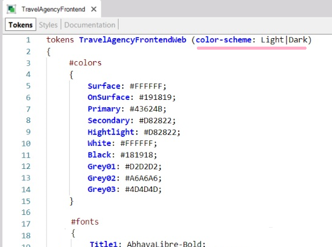
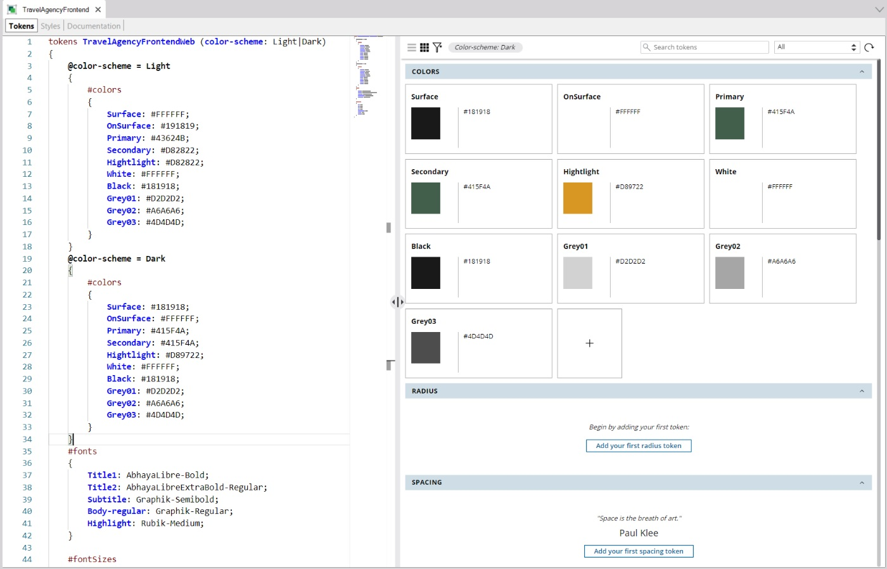

It is increasingly common for applications to provide one design for a Light color scheme and another for a Dark scheme.
For this reason, the designers have created both options for the home page:
And for the Attractions screen:
As you can see, the color of the surface or background is modified from a type of white to a type of black. Also, in the Dark mode the texts on the surface become their negative equivalent, and the texts that were highlighted in red will change to a type of yellow.
To represent these changes in the token values without having to duplicate anything, it is possible to define options for the tokens.
To do this, parameterize the set of tokens according to a parameter that you can name as you wish – in this case, "color-scheme” – and for which you define the two values that it can take:

Then, it will be enough to set that when using the Design System Object with Light color-scheme option, certain values should be assigned to the color tokens, and when using the Dark color-scheme option, other values should be assigned to the color tokens:

Boolean conditions are written with the "@" symbol.
Here you are only varying the color tokens, but it could be all of them.
In addition, here you are defining a single option, the color-scheme, but it could be platforms, for example, or any other that you can think of.
Now you only need to know how to apply one option or the other at runtime to the objects that use this DSO.
Since GeneXus 17 upgrade 6.
| Backlinks |
| Toc:Getting started with Design System Objects |